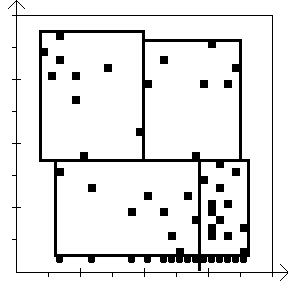
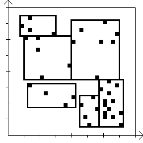

Paletti- ja muutostiivistävä animaatiotiedostojen pakkaaja
Projektityön dokumentti
T-106.1240 Ohjelmoinnin jatkokurssi T1
Dokumentin pääkohtien numerointi ja sisältö on tehty
vastaamaan
dokumenttiohjetta kurssin kotisivulla.
1 Henkilötiedot
2 Yleiskuvaus
3 Käyttöohje
4 Ohjelman rakenne
5 Algoritmit
6 Tietorakenteet
7 Tiedostot
8 Testaus
9 Ohjelman tunnetut puutteet ja viat
10 Kolme parasta ja kolme heikointa kohtaa
11 Poikkeamat suunnitelmasta
12 Toteutunut työjärjestys ja aikataulu
13 Arvio lopputuloksesta
14 Viitteet
15 Liitteet
Artturi Tilanterä
Tik IV
30.11.2008
Projektityönä on suunniteltu ja toteutettu videonpakkausohjelma
Java-ohjelmointikielellä. Työn tehtävänanto
kurssin www-sivuja lainaten on seuraava:
Animaatiotiedostojen pakkaaja
”Tee kuva-animaatiotiedostojen pakkaus- ja
purkuohjelma. Voit joko suunnitella oman animaatioformaatin, tai käyttää
jotain valmista.
Ohjelman työstää valituista raakakuvista animaatiotiedoston,
jonka tallentaminen levylle on tehokkaampaa (vie vähemmän tilaa) kuin jokaisen
raakakuvan tallentaminen erikseen. Vastaavasti ohjelma osaa myös purkaa
animaatiotiedosto takaisin raakakuviksi.
Raakakuvalla tarkoitetaan bittikarttaa, jossa jokaisen
pikselin väriarvo on erikseen ilmoitettu.
Algoritmien ei tarvitse olla täysin symmetrisiä eli puretut
raakakuvat voivat erota alkuperäisistä (kuten esim. MPEG)!
Ohjelman EI tarvitse osata näyttää ruudulle animaatioita.
Kiinnitä ohjelmassasi huomiota erityisesti purkunopeuteen
sekä tilansäästöön (pakkausnopeudella ei ole niin suurta merkitystä, koska se
pitää tehdä vain yhden kerran). Pohdi dokumentaatiossa formaatin soveltuvuutta
eri tarkoituksiin symmetrisyydestä, tilansäästöstä ym. seikoista
johtuen. – – –
Vaatimukset
Keskivaikea-vaativa
- ohjelmassa on kaksi moodia: pakkaus- ja purkumoodi
- pakkausmoodissa ohjelma lukee käyttäjän määrittelemät raakakuvat
tiedostoista, tekee niistä animaation ja tallettaa sen valitun nimiseen
animaatiotiedostoon
- purkumoodissa toiminta etenee päinvastaiseen suuntaan: ohjelma lukee
käyttäjän valitseman animaatiotiedoston, purkaa animaation ja tallettaa kuvat
valitun nimisiin tiedostoihin (esim. kuva0001.bmp, kuva0002.bmp,...)
- ohjelman EI tarvitse osata näyttää ruudulle animaatioita, mutta siitä saa
plussaa ja saattaapa se helpottaa ohjelman debug-operaatiotakin
- arvosteluun vaikuttaa keskeisesti pakkausalgoritmin laatu: simppelisti
ja vähän pakkaavalla algoritmilla varustetun työn katsotaan olevan keskivaikea,
paljon tiivistävällä vaativa”
Olen mielestäni toteuttanut työn vaikeusasteella vaativa
sillä perusteella, että sen toiminnallisuus on sama kuin minkä kuvasin
työn yleissuunnitelmassa: Pakkausalgoritmi on häviöllinen ja melko tehokas;
se perustuu ensisijaisesti väri-informaation rajoittamiseen yksittäisissä
kuvissa ja niiden osa-alueissa sekä vain muuttuvien osa-alueiden
tallentamiseen kuvan vaihtuessa seuraavaan. Ohjelma pystyy myös näyttämään
pakatun videon ruudulla.
Muutokset suunnitelmaan verrattuna
Ohjelman näyttäessä videota ruudulle ei ole toteutettu graafista
käyttöliittymää, jolla voisi vaikuttaa videon toistamiseen. Videota
toistettaessa voi vain lopettaa ohjelman suorittamisen sulkemalla
graafisen ohjelmaikkunan.
Ohjelmaa käytetään käyttöjärjestelmän komentoriviltä antamalla
parametreja käynnistyskomennon yhteydessä. Yleinen muoto ohjelman
käyttökomennolle komentoriviltä on seuraava:
java anip/Anip [parametrit]
Edellisessä tapauksessa ollaan hakemistossa, joka sisältää hakemiston
anip, joka sisältää ohjelman tavukoodimuodossa nimeltään
.class -päätteisinä tiedostoina. (Tässä siis komento
Java-virtuaalikoneen käynnistämiseksi on "java". Esimerkki
toimii ainakin Sun Microsystemsin Javan versiolla 6.)
Ohjelmalla voi pakata sarjan kuvatiedostoja yhdeksi videotiedostoksi,
purkaa videotiedoston sisällön takaisin sarjaksi kuvatiedostoja, ja
näyttää jo luodun videotiedoston sisällön ruudulla.
3.1 Videon pakkaaminen
Sarja kuvatiedostoja pakataan yhdeksi videotiedostoksi komennolla
java anip/Anip c video.ap F kuva0000.bmp
- Parametri
c on pakkauskomento.
video.ap on luotavan videotiedoston nimi.F on toistonopeus kuvina sekunnissa. Se voi olla kokonais-
tai desimaaliluku. Desimaaliluvuissa käytetään desimaalipistettä
(.) erottamaan desimaaliosa.kuva0000.bmp on kuvatiedostojen nimikaava:
ensin on alkuosa, jonka jälkeen seuraa sarja nollia, ja sitten on loppuosa.
Sarja nollia viittaa tiedostojen järjestysnumeroihin, jotka kertovat
kuvien toistojärjestyksen animaatiossa. Ensimmäisen kuvan järjestysnumero
on nolla. Jokaiseen järjestysnumeroon lisätään tarvittaessa etunollia niin,
että järjestysnumeron pituus on sama kuin nollien määrä nimikaavassa.
Videotiedoston nimessä ja kuvatiedostojen nimikaavassa voi olla
mukana hakemistopolku, joka on tällöin käyttöjärjestelmän yleisesti
käyttämässä muodossa.
Ohjelma aloittaa kuvatiedostojen lukemisen järjestysnumeroltaan
ensimmäisestä ja etenee lisäten aina välillä kuvia pakattavaan
videotiedostoon, kunnes seuraavaa kuvatiedostoa ei löydy, tai tulee virhe, tai
kaikki nimikaavan mukaiset kuvatiedostot on käyty läpi.
Ohjelman pakatessa videota se tulostaa aina seuraavaksi käsiteltävän
kuvatiedoston nimen, josta työn etenemistä voi seurata.
Ohjelma lukee ja kirjoittaa kuvatiedostoja, jotka ovat yleisesti
tunnetussa 24-bittinen Microsoft BMP -muodossa.
3.2 Videon purkaminen kuvatiedostoiksi
Yhden videotiedoston sisältö voidaan purkaa alkuperäistä mukailevaksi
sarjaksi kuvatiedostoja komennolla
java anip/Anip x video.ap kuva0000.bmp [alku] [loppu]
Parametrit ja numerointi ovat samat kuin videota pakattaessa,
paitsi että:
x on purkukomento pakkauskomennon sijaan.- Toistonopeutta ei ilmoiteta.
- Jos halutaan purkaa vain osa kuvista, parametrin
[alku]
kohdalle tulee ensimmäisen kuvan numero (kokonaisluku). Jos ensimmäisen
kuvan numero on annettu, voidaan halutessa antaa myös viimeisen kuvan
numero parametrin [loppu] kohdalle.
Jos kuvasarjan viimeisten kuvien numerot ovat suuremmat kuin mitä
tiedostojen nimikaavaan sopii, nimikaavaan lisätään tarvittava määrä
etunollia.
3.3 Videon näyttäminen ruudulla
Ohjelma näyttää pakatun videotiedoston sisällön ruudulla ohjelmaikkunassa
komennolla
java anip/Anip video.ap
jossa video.ap on toistettavan videotiedoston nimi.
Kun videon toistamisessa päästään loppuun, aloitetaan uudestaan alusta.
Toistamisen saa lopetettua sulkemalla ohjelmaikkunan.
Jos komentoriviparametreja ei anneta tai ne ovat virheellisiä,
ohjelma tulostaa ohjeet komentoriviparametrien antamisesta englanniksi.
4.1 Ohjelman luokkarakenne UML-kaaviona
Kaaviossa on ohjelman omat luokat, jokaisessa niiden oleellisimmat
metodit, sekä kuvaus luokkien välisistä suhteista: kuinka monta
luokan ilmentymää on mitäkin luokkaa kohtaan, mitkä luokat sisältävät
viittauksia mihinkin luokkiin (nuolet), mikä on yhden luokan suhde
toiseen luokkaan (esimerkiksi käyttää, kirjoittaa, lukee), ja
mitkä luokat periytyvät toisista luokista (katkoviivanuolet).
Kaavio on UML-mallinnuskieltä.
4.2 Kuvaus luokista ja niiden oleellisimmista metodeista
Luokkien metodit ovat julkisia ellei toisin mainita.
4.2.1 Ohjelman pääluokat
Anip
Pääluokka, joka käyttää muita luokkia.
main()
- Käynnistysmetodi. Delegoi komentoriviparametrien käsittelyn eräälle
yksityiselle metodille, joka päättää jatkotoimista. Jos
parametrisyöte oli kelvollinen, kutsutaan jotain seuraavasta kolmesta
metodista.
createAnimation()
- Luo uuden animaatiotiedoston BMP-kuvista kutsumalla
BMPFile- ja APEncoder -luokkien metodeita.
Yksityinen metodi.
extractAnimation() - Luo BMP-kuvatiedostosarjan
animaatiotiedoston perusteella kutsumalla APDecoder- ja
BMPFile -luokkien metodeita. Yksityinen metodi.
playAnimation() - Käynnistää graafisen käyttöliittymän
animaation toistoa varten luomalla PlayerWindow -olion.
Yksityinen metodi.
Bitmap
Säiliöolio, jota käytetään kuvadatan siirtämiseen luokkien välillä.
BMPFile
BMP-tiedostojen käsittely.
read() - Lukee BMP-tiedoston levyltä ja tallentaa
kuvasisällön Bitmap -olioon.
write() - Tallentaa Bitmap -olion kuvasisällön
BMP-tiedostoon levylle.
ByteIO
Pieni apuluokka BMP-tiedoston lukemiseen ja kirjoittamiseen.
Sisältää muunnokset tavuryhmien ja kokonaislukuarvojen välillä.
APDecoder
Animaatiotiedoston lukija ja purkaja.
openFile() - Aloittaa animaatiotiedoston purkamisen.
getLength() - Antaa animaation pituuden kuvien määränä.
getSpeed() - Antaa animaation nopeuden kuvina sekunnissa.
getImage() - Purkaa seuraavan kuvan tiedostosta ja palauttaa
kuvan Bitmap-oliossa.
readFrame() - Lukee seuraavan pakatun kuvan datan tiedostosta.
Yksityinen metodi.
decodeFrame() - Purkaa pakatun kuvan datan. Yksityinen
metodi. Käytännössä delegoi osatoimintoja toisille yksityisille metodeille.
APEncoder
Animaation pakkaaja ja levylle tallentaja.
setFile() - Aloittaa kirjoittamisen tiedostoon.
setOptions() - Asettaa animaation kuva- ja
toistoasetukset.
putImage() - Antaa pakkaajalle uuden kuvan pakattavaksi ja
liitettäväksi levylle kirjoitettavaan animaatiotiedostoon.
encodeFrame() - Pakkaa yhden kuvan datan. Yksityinen
metodi. Käytännössä delegoi osatoimintoja toisille yksityisille metodeille
sekä luokille ArrayMedianCut ja ListMedianCut.
writeFrame() - Kirjoittaa yhden pakatun kuvan datan
animaatiotiedostoon. Yksityinen metodi.
4.2.2 Graafinen käyttöliittymä (videon toistaminen ruudulla)
PlayerWindow
Graafinen käyttöliittymäikkuna. Periytyy Javan Swing -kirjaston
ikkunaluokasta JFrame.
VideoWindow
Alue, jossa toistettava videokuva näytetään. Periytyy Javan Swing
-kirjaston luokasta JPanel.
paintComponent() - Piirtometodi.
Sleeper
Aiheuttaa sopivan mittaisen tauon ohjelmassa jokaisen kuvan purkamisen
ja piirtämisen jälkeen, jotta animaation toistaminen ruudulle tapahtuisi
oikealla nopeudella. Vain graafista käyttöliittymää varten.
[16]
setInterval - Asettaa animaation kahden kuvan välisen
toistotauon pituuden.
measureWorkingStart() - Merkitsee muistiin ajanhetken
ennen seuraavan kuvan purkamista kuvan purkamiseen kuluvan ajan mittaamiseksi.
sleep() - Huomioi viimeisimmän kuvan purkamiseen kuluneen
ajan ja aiheuttaa sen perusteella ohjelman suorituksessa tauon niin,
että purkamiseen ja taukoon kuluu yhteensä kahden kuvan välinen toistotauko.
MedianCut
Median cut -periaatteella toimivien paletinmuodostajien abstrakti
kantaluokka.
createPalette() - Julkinen metodi, joka on luokan
käyttörajapintana. Tässä luokassa abstrakti; perillisluokkien tulee se
toteuttaa.
doMedianCut() - Suojattu metodi, jossa on se toiminnallinen
osuus, joka on yhteinen kaikille median cut -tyyppisille paletinmuodostajille.
ArrayMedianCut
Median cut -väripaletinmuodostaja, joka käsittelee eri värisävyjen
ilmenemistä lähdekuvassa yhtenä taulukkona, joka käsittää kaikki mahdolliset
eri RGB-väriavaruuden pisteet, ts. värisävyt. Käytetään väripaletin
luomiseen koko kuvalle.
createPalette() - Kantaluokan julkinen metodi toteutettuna
taulukoidun RGB-avaruuden versiona.
countOccurrences() - Suojattu metodi, joka laskee eri
värisävyjen esiintymisen lähdekuvassa ja tallentaa tiedot RGB-avaruuden
käsittävään taulukkoon.
ListMedianCut
Median cut -väripalentinmuodostaja, joka käsittelee eri värisävyjen
ilmenemistä lähdekuvassa listana eri värisävyistä ja niiden
esiintymistiheyksistä. Kun lähdekuvassa on valmiiksi vain muutamia satoja
eri värisävyjä, tämä versio on nopeampi kuin ArrayMedianCut.
Tämä versio on suunniteltu väripalettien luomiseen 16x16 pikselin
osakuville.
createPalette() - Kantaluokan julkinen metodi toteutettuna
listattujen värisävyesiintymien versiona.
countOccurrences() - Suojattu medoti, joka laskee eri
värisävyjen esiintymisen lähdekuvassa ja tallentaa tiedot listaan.
ColorOccurrence
Värisävyesiintymä ListMedianCut -toteutukselle:
värisävy komponenteittain ilmentymämuuttujissa
{ r, g, b }
sekä tieto siitä, kuinka monta kertaa värisävy esiintyy lähdekuvassa
(count).
ColorCuboid
Median cut -väripaletinmuodostuksessa käytettävä tietorakenne.
Esittää kolmiulotteisen RGB-väriavaruuden suorakulmaista särmiötä, joka voi
sisältää tietoa eri värisävyjen esiintymisestä kuvassa, jolle pyritään
muodostamaan optimaalinen väripaletti. ArrayColorCuboid- ja
ListColorCuboid -luokkien abstrakti kantaluokka, joka sisältää
muutaman metodin, joiden toteutus olisi täsmälleen sama edellämainituissa
periytyvissä luokissa. Lisäksi määriteltynä joukko abstrakteja metodeja, jotka
periytyvien luokkien pitää toteuttaa. Seuraavat metodit eivät ole
abstrakteja.
longestSide() - Palauttaa tiedon siitä, mikä särmiön
R-, G- ja B-akselien suuntaisista sivuista on pisin.
setProportions() - Asettaa särmiön sijainnin sekä leveyden,
pituuden ja korkeuden RGB-avaruudessa.
ArrayColorCuboid
ArrayMedianCut -toteutuksessa käytettävät värisärmiöt,
jotka käsittelevät värien esiintymisinformaatiota taulukoituna RGB-avaruutena.
getColor() - Palauttaa painotetun keskiarvon särmiön
sisältämistä väreistä.
getMedian() - Palauttaa annetun akselin (R, G tai B)
suuntaisen sivun mediaanipisteen.
minimize() - Minimoi särmiön koon siten, että särmiön sivut
koskettavat niitä uloimpia särmiön sisältämiä RGB-avaruuden värisävyjä,
jotka esiintyvät lähdekuvassa.
newInstance() - Luo uuden ArrayColorCuboid -tyyppisen
olion.
split() - Jakaa särmiön annettua akselia
(R, G tai B) kohti kahdeksi erilliseksi särmiöksi.
ListColorCuboid
ListMedianCut - toteutuksessa käytettävät värisärmiöt,
jotka käsittelevät sisältämiään väriesiintymiä listana väriesiintymiä
(luokka ColorOccurrence).
Metodit ovat toiminnoiltaan ArrayColorCuboidia vastaavat,
mutta tässä luokassa toteutettu listaversiona.
4.3 Vaihtoehtoisia toteutuksia ja nykyisen perustelu
BMP-tiedoston lukurutiinit ovat omassa luokassaan, jotta niitä voidaan
tarvittaessa käyttää uudelleen toisissa ohjelmissa. BMP-tiedoston luku- ja
kirjoitusrutiinit ovat hyvin yksinkertaisia, joten on luontevaa säilöä
molemmat samaan luokkaan. [1]
Graafinen käyttöliittymä on omissa luokassaan jo Javan AWT- ja Swing-
käyttöliittymäkirjastojen käyttötavan pakottamana.
[2], [3] Tässä ratkaisussa on
se etu, että graafista käyttöliittymää voidaan muuttaa helposti tai
se voidaan jättää pois tai korvata toisella.
Bitmap on kätevä säiliöolio. Sen avulla voi välittää
pikselidatan mukana kuvan leveyden ja korkeuden yhtenä ainoana
metodikutsun parametrina, tai jopa palauttaa kaikki nämä tiedot metodin
paluuarvona.
Tietysti on kapselointi-idean vastaista, että varsinaisen kuvadatan
sisältävät kentät ovat julkisia. [4]
Vaihtoehtona olisi tehdä metodit, jotka
kirjoittavat ja lukevat kuvadataa pikseli tai alue kerrallaan, mutta
juuri tässä ohjelmassa tiuhaan toistuvat metodikutsut ja niihin liittyvät
tarkistukset parametrien oikeista arvoista söisivät suorituskykyä.
Sittenkin, jos esimerkiksi animaatiota purettaessa dekooderi lisäisi
RGBBitmap-olioon tietoa aina yksi 8x8 pikselin lohkoista koostuva
vaakarivi kerrallaan, niin data jouduttaisiin kuitenkin kopioimaan, mikä
tuntuu tarpeettomalta verrattuna siihen, että dekooderi kirjoittaa datan
kerran tähän säiliöolioon ja siitä eteenpäin se luetaan kerran kirjoitettaessa
BMP-tiedostoon tai ruudulle piirrettäväksi.
APEncoder ja APDecoder olisivat voineet olla molemmat samassa luokassa.
Toisin kuin BMP-rutiinit, ne ovat monimutkaisia. Jos ohjelmasta halutaan
tehdä versio, joka on vain videota toistava Java-appletti web-sivulla, niin
animaation pakkausrutiini vie vain turhaan tiedonsiirtoaikaa ja appletti
käynnistyy hitaammin, kun sen tavukoodi pitää kääntää käytettäväksi.
Sen sijaan animaatiotiedoston luku- ja kirjoitusrutiinien on luontevaa olla
samoissa luokissa kuin purku- ja pakkausrutiinien, koska ne lähinnä
toimivat välittäjänä massamuistille ja edellämainituille
datankäsittelyrutiineille.
Videonpakkaukseen liittyvät kantaluokat MedianCut ja ColorCuboid eivät ole
pakollisia; niihin lähinnä on koottu toimintoja, jotka ovat toteutukseltaan
täsmälleen samanlaiset kunkin kantaluokan perillisluokissa. Periaatteessa
olisi mahdollista tehdä toisistaan täysin riippumattomat
ArrayMedianCut/ArrayColorCuboid- ja ListMedianCut/ListColorCuboid
-luokkakokonaisuudet: APEncoder-luokassa on selvää, milloin käytetään
mitäkin versiota median cut -toiminnallisuudesta. Lähinnä onkin haluttu
pienentää ohjelmakoodin kokoa vähentämällä toimintojen toisteisuutta sekä
eliminoida virheet, jotka voivat syntyä, kun kehitetään kahta luokkaa,
joissa on paikoitellen identtistä koodia, mutta luokat eivät ole riippuvia
toisistaan.
Ohjelman koko videonpakkaamisprosessi sisältää kaiken kaikkiaan
seuraavat vaiheet järjestyksessä yhtä kuvaa kohti:
- Kuva jaetaan 8x8 pikselin ruutuihin ("lohkoihin"), joista merkitään
tallennettavaksi vain edelliseen kuvaan verrattuna riittävästi muuttuvat
lohkot. ("Riittävästi" tarkoittaa, että lohko merkitään muuttuvaksi, jos
jokin siihen kuuluvan pikselin väriarvo muuttuu RGB-etäisyydeltään yli
sallitun rajan edellisen ja nykyisen kuvan välillä.)
Tässä vaiheessa
kuvainformaatio pienenee yleensä noin 50%, tosin pakkautuvuus riippuu
suuresti kuvamateriaalista: esimerkiksi panoroitava tai zoomattava tausta
ei pakkaudu tällä menetelmällä lainkaan.
Tätä vaihetta esittää
liitteen 4 kohta 2.
- Jäljelle jääville lohkoille muodostetaan yhteinen, optimaalinen
256 värin paletti median cut -algoritmilla. Optimaalinen tarkoittaa, että
paletin värivalikoima edustaa mahdollisimman hyvin alkuperäiskuvan
värisävyjen jakaumaa tai kirjoa. Median cut -algoritmi on
kuvattu tarkemmin kohdassa 5.3. Värit sovitetaan paletille pikseli
kerrallaan käyttämällä lineaarista kokeilua, toisin sanoen käymällä
jokaista pikseliä kohti jokainen paletin väri ja valitsemalla se paletin
väri, jonka etäisyys RGB-avaruudessa on pienin alkuperäisväriin nähden.
Näin saadaan kuvadata pakattua 1/3, kun alkuperäiskuvan värisyvyys
on 24 /pikseli, mutta 256-värinen kuva voidaan esittää
8 bitillä/pikseli.
Tätä vaihetta esittää
liitteen 4 kohta 3..
- Kuva käsitellään 16x16 pikselin lohkoina seuraavasti. Ensinnäkin
valitaan käsiteltäväksi vain ne 16x16 pikselin lohkot, "päälohkot",
jotka sisältävät muuttuvia 8x8 pikselin lohkoja. (Muuttumattomat 8x8
pikselin lohkot 16x16 pikselin lohkoissa merkitään yhtenäisellä värillä.)
Jokaiselle 16x16 pikselin lohkolle muodostetaan ja sovitetaan oma
16 värin väripaletti median cutilla ja lineaarisella kokeilulla. Lohkon
paletin värit ovat koko kuvan 256 värin paletin värejä.
Tässä vaiheessa saadaan
kuvainformaatio pienennettyä kooltaan edelleen puoleen, kun
yhtä pikseliä kohti tarvitaan vain 4 bittiä viittauksena 16 värin
päälohkokohtaiseen palettiin. Tietenkin jokaista tallennettavaa päälohkoa
kohti tarvitaan vielä 16 x 1 tavua: päälohkon paletti, jonka värit ovat
viittauksia koko kuvan 256 värin palettiin.
Tämä vaihe on esitetty
liitteessä 4 kohdassa 4,
sikäli kuin sen voi silmin erottaa, sekä
tämän dokumentin kohdassa 11.2.
- Jokaisen 16x16 pikselin lohkon pikselit tallennetaan riveittäin
vasemmalta oikealle ja ylhäältä alas käyttäen RLE-pakkausta.
Tästäkin on muutama kuva
kohdassa 11.2.
[7]
Näin ollen yhdestä kuvasta tallennetaan pakattuun animaatiotiedostoon
seuraavat tiedot:
- Mitkä 8x8 pikselin lohkot muuttuvat
- 256 värin kuvapaletti
- Kaikki 16x16 pikselin alueet, jotka sisältävät 8x8 pikselin
muuttuvia alueita
- Jokaiselle 16x16 alueelle 16 värin paletti ja alueen pikselit
RLE-pakkauksella, 4 bittiä per pikseli pakkaamattomana.
5.2 Väripaletit sekä koko kuvalle että kuvan osa-alueille
Ohjelma siis tiivistää kuvaa pakkaamalla väri-informaatiota
häviöllisesti muodostamalla kullekin animaation kuvalle oman väripaletin,
jossa on hyvin rajallinen määrä värisävyjä, joilla jokaisella on järjestysnumero.
Väripaletti muodostetaan niin, että siihen tulevat sävyt edustavat mahdollisimman
hyvin alkuperäiskuvan värijakaumaa, ja sitten jokaiselle pikselille valitaan
paletista sävyltään lähinnä oleva väri.
Ensinnäkin ideana on se, että pikselien värien koodaaminen paletin värien
järjestysnumeroina vie vähemmän informaatiotilaa kuin värien koodaaminen
RGB-väriarvoina. Tarkemmin: kun yhden RGB-väriarvon esittämiseen tarvitaan 24
bittiä, mutta paletissa on vain 256 väriä, jotka voidaan esittää kahdeksalla
bitillä, niin väridatan tilantarve pienenee kolmannekseen.
Toiseksi, kun kuvassa on rajallinen määrä värejä, niin suuri määrä
hyvin samansävyisiä värejä pelkistyy yhdeksi ainoaksi väriksi, jolloin
alueet, joilla on vain pieniä värisävyn vaihteluita, pystytään esittämään
yhdellä värillä, ja yhtenäiset, yksiväriset värialueet edelleen pystytään
tehokkaasti pakkaamaan jakson pituuden koodauksella (engl. RLE, run-length
encoding). Oletuksena on, että värien alkuperäinen sävyvaihtelu on pääosin
niin pientä, että sen katoaminen sävyjen pelkistyessä yhdeksi ainoaksi
sävyksi ei vielä häiritse silmää merkittävästi, etenkin kun kyse on
liikkuvasta, jatkuvasti muuttuvasta videokuvasta.
Koko kuvan käsittävän paletin luomisen ja sovittamisen jälkeen kuva jaetaan
vielä 16x16 pikselin osa-alueisiin, "päälohkoihin", joille luodaan entistä
rajallisemmat aluekohtaiset paletit. Ideana on pakata väri-informaation viemä
tila edelleen puoleen sallimalla kullekin osa-alueelle vain 16 erilaista
väriä, jolloin yhden pikselin väri-informaatio vie vain neljä bittiä.
Taustalla on oletus siitä, että riittävän pienissä kuvan osa-alueissa on
keskimäärin niin rajatut värijakaumat, että värien määrä on vain murto-osa
koko kuvapaletin väreistä.
- Onko tämä vain huono GIF-animaatio?
Seuraavassa on lyhyesti tutkittu, miten kannattava ratkaisu kuvan
pakkaaminen vielä toistamiseen osakuvakohtaisilla paleteilla on kuvanlaadun
ja datan pakkautuvuuden kannalta. Onhan selvää, että kuvan laatu heikkenee
joka kerran, kun väri-informaatiota tiivistetään häviöllisesti. Jos vielä
kuvan osa-alueissa tehdään toisistaan riippumattomia häviöllisiä pakkauksia,
kuvasta saattaa lopulta tulla epäselvä, jos osa-alueet ovat muuttuneet niin
paljon, ettei niitä enää pysty saumattomasti yhdistämään yhdeksi
kokonaisuudeksi.
 |

|
Kuvat 5.2.1.1 ja 5.2.1.2.
Alkuperäiset kuvat. Oikeanpuoleisessa on vain riittävän
erilaiset 8x8 pikselin alueet verrattuna vasemmanpuoleiseen, muu osa kuvasta
samaa mustaa väriä. Pakkaamaton 24-bittinen RGB-värikoodaus.
Koko BMP-tiedostoina 2 * 432 kt = 864 kt. |
 |
|
Kuvat 5.2.1.3 ja 5.2.1.4.
Edelliset kuvat, jolle kummallekin on muodostettu ja
sovitettu 8-bittinen, oma, koko kuvalle yhteinen paletti.
8-bittisinä BMP-tiedoistona, joissa on koko kuvalle yhteinen
RLE-pakkaus: koot 61 kt + 61 kt = 122 kt..
8-bittisinä GIF-tiedostoina, joissa on RLE:tä tiiviimpi LZW-pakkaus:
koot 57 kt + 39 kt = 96 kt. [31]
|
|
|
Kuvat 5.2.1.5 ja 5.2.1.6.
Edelliset kuvat vielä sen jälkeen, kun animaatiotiedostojen pakkaajalla on
16x16 pikselin alueille on aluekohtaisesti annettu enintään 16 väriä
käytettäväksi, ja jokaisen tällaisen alueen sisällä käytetty pikselidatan
RLE-pakkausta.
Koko yhteensä pakattuna animaatiotiedostona: 79 kt.
|
Edellisestä vertailusta voi todeta, että lohkokohtaisen palettipakkauksen
käyttäminen todella on melko tehokasta, kun lohkokohtaisten palettien ja
4-bittisen värikoodauksen yhdistäminen pikselien RLE-pakkaukseen kunkin lohkon
sisällä tiivistää selvästi enemmän kuin BMP-kuvan koko kuvalle yhteinen
pikselien RLE-pakkaus 8-bittisellä värikoodauksella, ja jopa hieman enemmän
kuin GIF-kuva, jossa koko kuva on pakattu RLE:tä paremmin tiivistävällä
LZW-pakkauksella. Toisaalta väri-informaation rajoittaminen vielä
lohkokohtaisilla paleteilla yhtenäisen kuvapaletin lisäksi aiheuttaa värien
haalistumista ja vääristymistä entisestään (vaikka sitä ei välttämättä
ensi silmäyksellä havaitse).[17]
Jos vertaa kuva- ja animaatiotiedostojen pakkausta analyyttisemmin, niin
animaatiotiedosto saa tiedostokokovertailussa etumatkaa siinä, että sen ei
tarvitse käsitellä oikeanpuoleisessa testikuvassa lainkaan mustia,
muuttumattomia alueita, kun taas BMP- ja GIF-kuviin nämäkin pikselit joudutaan
tallentamaan ja pakkaamaan. Siinä missä BMP-kuvan RLE-pakkaus pakkaa hyvin
yhtenäisen värisiä, yhden pikselin korkeuksisia vaakajuovia kuvassa, niin
animaatiotiedoston pakkaus pakkaa hyvin yhtenäisen värisistä 16x16 pikselin
ruuduista koostuvia alueita. Lisäksi animaatiotiedoston pakkauksen teho
heikkenee siksi, että jokaista 16x16 pikselin lohkoa kohti joudutaan
tallentamaan kiinteä, 16 tavun pituinen lohkokohtainen paletti.
Idea kuvan pakkaamiseen vielä tällä tavalla pienten neliön muotoisten
osa-alueiden sisällä on tietenkin tullut MPEG-videonpakkauksesta, jossa
yhtälailla pakataan neliön muotoisten osa-alueiden pikseleitä, joskin
paljon tehokkaammalla diskreetin kosinimuunnoksen ja Huffman-koodauksen
yhdistelmällä. Omasta mielestäni tämä MPEG:n idea sovellettuna paletti-
ja RLE-pakkaukseen toimii yllättävän hyvin verrattuna siihen, kuinka
vähän kuvanlaatu operaatiossa heikkenee. Tietystikin muutokset kuvassa
verrattuna alkuperäiseen on selvästi havaittavissa, joten lienee osittain
makuasia, onko kuvanlaatu vielä hyväksyttävän rajoissa. Loppujen lopuksi
kyseessä onkin teknisesti melko yksinkertainen kokeilu.
[19]
Median cut on luultavasti tunnetuin menetelmä luoda kuvasta rajoitetun
määrän eri värejä sisältävä paletti, joka on lähes optimaalinen, toisin
sanoen paletin värit edustavat mahdollisimman hyvin alkuperäiskuvan
värisävyjakaumaa. Menetelmän nimi tulee siitä, että värisävyjen
esiintymistiheydet sisältävää RGB-väriavaruutta jaetaan pienimpiin,
suorakulmaisen särmiön muotoisiin osiin aina jakamalla suurempi
särmiö kahtia pisimmän sivun mediaanipisteestä.
[5]
Käytännössä algoritmi etenee seuraavasti:
0. Käy läpi kaikki lähdekuvan pikselit, ja kerää tieto siitä, mitä eri
värisävyjä kuvassa on, ja kuinka monessa pikselissä mikin värisävy esiintyy.
Tuloksena on kolmiulotteinen RGB-avaruus, jossa värisävyt ovat pisteinä,
ja joka pisteessä on tieto värin esiintymistiheydestä.
1. Luo aloitussärmiö, joka käsittää koko RGB-avaruuden pisteet.
Minimoi särmiö niin, että sen sivut koskettavat RGB-avaruuden keskustasta
katsoen uloimpia kuvassa esiintyviä värejä.
2. Valitse tilavuudeltaan suurin särmiö.
3. Valitse särmiöstä pisin sivu (R-, G- tai B-akselin suuntainen).
4. Puolita särmiö valitulta sivulta mediaanipisteestä.
5. Minimoi kaksi syntynyttä puolikasta kuten kohdassa 1.
5. Poista alkuperäinen särmiö särmiöiden joukosta ja lisää tilalle
kaksi syntynyttä puolikasta.
6. Jos särmiöitä on yhtä monta kuin paletissa tulee olla värejä, jatka
kohtaan 7. Muuten siirry kohtaan 2.
7. Käy läpi kaikki syntyneet särmiöt. Jokainen särmiö vastaa yhtä
paletin väriä siten, että paletin väri on särmiön sisältämien värien
keskiarvo painotettuna värien esiintymistiheydellä.
[9]
Seuraavassa on havainnollistus algoritmin toiminnasta, tosin
kuvaamisen helpottamiseksi kahdessa ulottuvuudessa. Datapisteet jaetaan
esimerkissä kahdeksaan joukkoon (tässä suorakulmioon, jotka vastaavat
särmiöitä oikeassa kolmiulotteisessa versiossa). Kumpaakin akselia kohti on
mahdollista 32 eri arvoa. Musta neliö tarkoittaa, että kyseistä avaruuden
arvoa esiintyy lähdedatassa enemmän kuin nolla kertaa.
1a. Algoritmin kohta 1, aloitussärmiö. |
1b. Kohta 1, minimointi. |
2a. Kohdat 2-4, särmiön ja sivun valinta, puolitus. |
2b. Kohta 5, puolikkaiden minimointi. |
3a. Kohdat 2-4, särmiön ja sivun valinta, puolitus. |
3b. Kohta 5, puolikkaiden minimointi. |

4a. Kohdat 2-4, särmiön ja sivun valinta, puolitus. |
4b. Kohta 5, puolikkaiden minimointi. |
5a. Kohdat 2-4, särmiön ja sivun valinta, puolitus. |
5b. Kohta 5, puolikkaiden minimointi. |
6a. Kohdat 2-4, särmiön ja sivun valinta, puolitus. |

6b. Kohta 5, puolikkaiden minimointi. |
7a. Kohdat 2-4, särmiön ja sivun valinta, puolitus. |
7b. Kohta 5, puolikkaiden minimointi. |
8a. Kohdat 2-4, särmiön ja sivun valinta, puolitus. |
8b. Kohta 5, puolikkaiden minimointi. |
Jokaiselle pikselille etsitään väriarvoltaan läheisin paletin
väri seuraavasti.
Kun pikselin väri on (r, g, b), joissa r:n,
g:n ja b:n arvot ovat välillä 0..255, ja paletin väriarvot
ovat pr[i], pg[i], pb[i] samaten arvoiltaan välillä
0..255 kuten myös indeksi i, niin
sopivin paletin väri pikselille on se, jolla pikselin väriarvon etäisyys
paletin väristä RGB-väriavaruudessa on pienin. Tämä on se i:n arvo,
jolla
sqrt( (pr[i] - r)^2 + (pg[i] - g)^2 + (pb[i] - b)^2 )
on pienin. (sqrt(a) on neliöjuuri a:sta, a^2 on a korotettuna toiseen
potenssiin.) [5]
Käytännössä jokaista pikseliä kohti käydään läpi jokainen väripaletin
väri, mitä kutsutaan lineaariseksi kokeiluksi. Yleisesti ottaen sopivimman
paletin värin etsiminen mielivaltaiselle värisävylle on ongelma nimeltään
lähimmän naapurin etsintä (engl. nearest neighbour search), ja
lineaarinen kaikkien vaihtoehtojen läpikäyminen on helpoimmin toteutettava,
mutta samalla tehottomin ratkaisualgoritmi ongelmaan.
Joitakin kokeiltuja vaihtoehtoisia algoritmeja on selostettu kohdassa 13.3. Osoittautui, että parempi ratkaisu,
jossa olisi jokin kehittynyt hakurakenne, täytyisi olla hyvin
suunniteltu ja optimoitu, jotta se olisi tehokkaampi kuin
muutama kerto- ja yhteenlasku, jotka edellämainitussa kaavassa
pitää suorittaa jokaista paletin väriä kohti lineaarisessa kokeilussa,
ja joka kuitenkin on melko nopea, kun sen toteuttaa
Java-ohjelmointikielellä optimaalisesti. [10]
6.1 Taulukot
Pääosa ohjelman käsittelemästä datasta, kuten bittikarttamuotoiset kuvat
sekä RGB-väriarvoja sisältävät väripaletit, ovat taulukkoina, koska niiden
käsittely on nopeinta ja datan määrä ei muutu oleellisesti. Taulukoiden
käyttöä luonnollisesti tukee se, että animaation kuvat ovat aina saman
kokoisia, kuvan osa-alueet kiinteän kokoisia neliöitä, ja paleteissa on aina
enintään melko alhainen maksimimäärä värejä.
6.2 Listat
Käytettäessä median cut -paletinmuodostusta erikseen jokaiselle
16x16 pikselin osakuvalle on koko RGB-väriavaruuden läpikäyminen taulukkona
aivan liian raskas operaatio. 16x16 pikselin kuvassa on enintään
16 *16 = 256 erilaista väriä, jotka voidaan tallentaa
listaksi, ja 256 värin listan lineaarisen läpikäymisen aikavaatimus on
huomattavasti pienempi kuin taulukkomaisen RGB-väriavaruuden lineaarinen
läpikäyminen. (Esimerkiksi jos RGB-väriavaruuden tarkkuus on 6 bittiä
per värikomponentti, niin avaruuden koko on
(2^6) ^3 = 2^18, mikä on 2^10 kertaa 256:n eli 2^8:n
pituisen listan koko.)
Näin edelleen median cut -algoritmin värisärmiöt voivat tallentaa
kukin omaan listaansa tiedon siitä, mitä kuvan värejä kukin särmiö sisältää.
(Tässä viitataan ohjelmakoodin luokkiin ListMedianCut,
ListColorCuboid ja ColorOccurrence, jotka
on esitelty lyhyesti kohdassa 4.2.3.)
Ohjelma käsittelee yksittäisiä kuvatiedostoja, joista se luo uuden
animaatiotiedoston, tai vastaavasti erottaa animaatiotiedostosta
animaation kuvat kukin omaksi kuvatiedostokseen.
7.1 Kuvatiedostot
Yksittäiset kuvatiedostot, joista animaatio koostuu, ovat yleisesti
hyvin tunnetussa BMP-muodossa ja tarkemmin 24-bittisiä, pakkaamattomia
bittikarttoja. Muita BMP-muodon versioita ohjelma ei siis hyväksy
eikä tuota. BMP-kuvien tiedostonimen pääte on .bmp.
7.1.1 BMP-tiedoston rakenne
Alun tunnistenumeroa lukuun ottamatta kaikki kokonaislukuarvot ovat
little-endian -tavujärjestyksessä, siis vähiten merkitsevin tavu ensin.
Kokonaislukuarvot ovat etumerkittömiä ellei toisin mainita.
| Osio |
Koko/tavua |
Informaatio tai tarkoitus |
Alkuosio
(BMP header) |
2 |
BMP-tiedoston tunnistenumero: heksadesimaalina 42 4D. |
| 4 |
BMP-tiedoston koko tavuina |
| 4 |
Varattu. (Luettaessa ei käsitellä, kirjoittaessa
00 00 00 00).
|
| 4 | Osoite (tavua alusta), josta bittikarttadata löytyy |
Informaatio-osio
(DIB header) |
4 |
Informaatio-osion koko (40 tavua) |
| 4 |
Kuvan leveys pikseleinä (etumerkillinen kokonaisluku) |
| 4 |
Kuvan korkeus pikseleinä (etumerkillinen kokonaisluku) |
| 2 |
Väritasojen lukumäärä. Oltava arvoltaan 1. |
| 2 |
Värikoodauksen laajuus bittiä per pikseli. Tässä ohjelmassa
oltava 24.
|
| 4 |
Pakkausmenetelmä. Oltava 0, mikä tarkoittaa "ei pakkausta". |
| 4 |
Kuvadata-osion koko |
| 4 |
Kuvan vaakaresoluutio. (Pikseliä metrille, etumerkillinen kokonaisluku)
Kirjoittaessa 2835, mikä vastaa resoluutiota 72 DPI (pistettä tuumalle;
melko yleisesti sopiva vakio). |
| 4 |
Kuvan pystyresoluutio. (Pikseliä metrille, etumerkillinen kokonaisluku)
Kirjoittaessa 2835, mikä vastaa resoluutiota 72 DPI (pistettä tuumalle;
melko yleisesti sopiva vakio). |
| 4 |
Värien määrä paletissa. Luettaessa ei käsitellä, kirjoittaessa 0.
|
| 4 |
Tärkeiden värien määrä, tai 0, kun jokainen väri on tärkeä.
Luettaessa ei käsitellä, kirjoittaessa 0. |
| Kuvadata |
n |
Varsinainen kuva pikseli kerrallaan vaakariveittäin vasemmalta oikealle ja
alhaalta ylös.
Yhden pikselin väriarvo on kolmen tavun ryhmä järjestyksessä BGR,
jossa B, G ja R tarkoittavat vastaavasti sinisen, vihreän ja punaisen
komponentin voimakkuutta kukin arvolla väliltä 0-255.
Jokaista vaakariviä kohti tiedostossa täytyy olla neljällä jaollinen määrä
tavuja. Käytännössä jokaisen vaakarivin pikselidatan jälkeen lisätään
tarvittaessa yhdestä kolmeen tavua. Luettaessa ne ohitetaan, kirjoittaessa
arvoina 0. |
7.2 Animaatiotiedostot
Animaatiotiedostojen nimen pääte on .ap, ja niiden rakenne
on itse suunniteltu.
7.2.1 AP-tiedoston rakenne
Kaikki lukuarvot ovat etumerkittömiä kokonaislukuja ellei ole toisin
merkitty. Muutokset projektin suunnitelmaan nähden on merkitty tekstillä
"(MUUTOS)" tai "(LISÄYS)", jotka ovat samalla linkkejä
dokumentin kohtaan 11 "Poikkeamat suunnitelmasta",
jossa on lisäselitys kuhunkin muutokseen liittyen.
| Osio |
Koko/tavua |
Informaatio tai tarkoitus |
| Alkuosio |
4 |
AP-tiedoston tunnistenumero: heksadesimaalina
41 4E 49 50, jota vastaa ASCII-teksti "ANIP".
|
| 1 |
Tiedostorakenteen versio. Arvo = 1. |
| 4 |
Kuvien määrä |
| 4 |
Animaation nopeus kuvina sekunnissa (engl. FPS, frames per
second). Liukuluku. Arvo on positiivinen. |
| 4 |
Avainkuvien (keyframes) lukumäärä |
| 2 |
Kuvan leveys pikseleinä |
| 2 |
Kuvan korkeus pikseleinä |
| |
| Avainkuva |
1 |
Kuvan tyyppi. Arvo = 1, joka tarkoittaa avainkuvaa. |
| 4 |
(LISÄYS) Kuvadatan pituus tavuina. Tähän
kuvaan kuuluvan pakatun datan pituus tiedostossa tästä eteenpäin. |
| 4 |
Avainkuvan järjestysnumero. Ensimmäinen järjestysnumero on 0.
|
| 4 |
Etäisyys edellisen avainkuvaosion alkuun tavuina.
Etumerkillinen kokonaisluku. Kun tämän avainkuvan järjestysnumero on 0, on
tämän etäisyyden arvo 0. |
| 4 |
Etäisyys seuraavan avainkuvaosion alkuun tavuina.
Etumerkillinen kokonaisluku. Viimeisessä avainkuvan tämän etäisyyden
arvo on 0. |
| pi |
256 värin kuvapaletti, joka on pakattu.
Värit esitetään järjestyksessä 0..255 seuraavanlaisissa pakkaussarjoissa.
Ensin on tavu A. Jos tavun A arvo on 0-127, se tarkoittaa, että seuraavilla
1..128 järjestysnumerolla tavun A arvoa vastaten on uusia värejä, joiden
väriarvot tulevat seuraavaksi. Silloin tavua A seuraa (1..128)*3 tavua
väriarvodataa muodossa RGB RGB RGB ..., eli 3 tavua per värikomponentti
järjestyksessä punainen, vihreä, sininen.
Jos tavun A arvo on 128-255, se tarkoittaa, että seuraavilla 1..128 indeksillä
tavun A arvoa vastaten on vanhoja värejä, ts. värejä, jotka ovat samat kuin
edellisessä paletissa vastaavilla järjestysnumeroilla.
|
n * mj
j = 1..n |
(MUUTOS)
Kuvadata jaettuna 16x16 pikselin lohkoihin. Lohkot kuvataan
yksi kerrallaan. Lohkojen järjestys on vasemmalta oikealle riveittäin ja
ylhäältä alas. Lohkon sisällä pikselit on kuvattu samaten vasemmalta oikealle
riveittäin ja ylhäältä alas. Jos kuvan leveys tai korkeus ei ole jaollinen
16:lla, niin kuvan oikean reunan ja alareunan lohkoissa on tarvittava
määrä täytepikseleitä.
Lohkot ovat pakattuja, ja niiden sisällä kuvadata on seuraavanlaista.
Jokaisessa lohkossa on 16 värin lohkopaletti. Lohkon paletin värit
koostuvat kuvapaletin väreistä, ja ne on valittu siten, että ne edustavat
mahdollisimman hyvin lohkon pikselien alkuperäisiä väriarvoja 256 värin
kuvapaletilla. |
| mj |
16 värin lohkopaletti, joka on pakattu. Ensin on 16 bittiä kahtena
tavuna, jotka ilmaisevat, mitkä värit ovat erilaisia kuin edellisen lohkon
paletissa.
Esimerkiksi bittisarja 00011000 00101001 tarkoittaa, että
värit 3, 4, 10, 12 ja 15 ovat uusia. Näiden kahden bitin jälkeen on
niin monta tavua kuin edellisessä kahdessa tavussa oli arvoltaan 1 olevia
bittejä. Nämä tavut ovat kukin yksi 256 värin kuvapaletin väri, ja ovat
siis tässä lohkossa uusia värejä.
|
(MUUTOS)
Lohkon pikselit, jotka on pakattu jakson pituuden koodauksella
neljän bitin mittaisina puolitavuina seuraavasti.
1. Kaksi puolitavua, joiden bitit ovat ABBB BBBB.
1.a.1. Jos A = 0, seuraavaksi on (BBB BBBB) + 1 eli 1..128
pikseliä pakkaamatonta dataa.
1.a.2. Pakkaamaton data, yksi puolitavu per pikseli, joka tarkoittaa
kyseisen pikselin väriarvoa kyseisen päälohkon paletilla.
1.b.1. Jos A = 1, seuraavaksi on (BBB BBBB) + 1 eli 1..128
pikseliä pakattua dataa.
1.b.2. Puolitavu, jonka bitit CCCC ilmaisevat pakattujen pikselien
värin.
Jos puolitavujen kokonaismäärä yhden päälohkon pakatussa pikselidatassa on
pariton, niin pakatun pikselidatan loppuun lisätään vielä neljä bittiä,
jotta pakatun pikselidatan pituus on tasan kokonaisia tavuja. |
| |
| Jatkokuva |
1 |
Kuvan tyyppi. Arvo = 0, joka tarkoittaa jatkokuvaa. |
| 4 |
(LISÄYS) Kuvadatan pituus tavuina. Tähän
kuvaan kuuluvan pakatun datan pituus tiedostossa tästä eteenpäin. |
| pi |
256 värin kuvapaletti kuten avainkuvassa. |
| mi |
Kuvadata 16x16 pikselin lohkoina kuten avainkuvassa, paitsi
että vain edelliseen kuvaan verrattuna muuttuvat 8x8 pikselin lohkot
tallennetaan, mikä on koodattu seuraavasti.
(MUUTOS)
Ensinnäkin jokaista 8x8 pikselin lohkoa kohti on yksi bitti muuttuvuustietoa.
Bitin arvo 0 tarkoittaa, että lohko ei muutu tässä kuvassa, ja arvo 1
tarkoittaa, että lohko muuttuu tässä kuvassa.
Itse muuttuvuustieto on koodattu seuraavanlaisina sarjoina.
Ensin on tavu A. Jos A:n arvo on 0..127, on seuraavaksi (1..128).
edelliseen kuvaan verrattuna lohkoa, joiden muuttuvuustieto pysyy samana.
Jos A:n arvo on 128..191, seuraavaksi on (1..64) lohkoa, joiden muuttuvuustieto
on käänteinen edelliseen kuvaan verrattuna.
Jos A:n arvo on 192..255, seuraavaksi on (1..64) lohkoa, joiden muuttuvuustieto
tulee seuraavaksi bitti kerrallaan, kuitenkin bittien määrä kokonaisia tavuja
(täytebittejä on tarvittaessa).
Sarja päättyy tähän, ja sitä seuraa toisia samalla tavalla koodattuja
sarjoja kunnes kaikki muuttuvuustieto, tai oikeammin muuttuvuustiedon
muutokset, on esitetty.
Muuttuvuustiedon jälkeen seuraa 16x16 pikselin lohkojen data.
|
AP-tiedostossa tulee ensin alkuosio, jonka jälkeen on avainkuvaosioita.
Jokaisen avainkuvaosion jälkeen voi olla jatkokuvaosioita. Avainkuvaan on
tallennettu koko kuva, jatkokuvaan vain muuttuvat kohdat suhteessa
edelliseen kuvaan, joka voi olla jatkokuva tai avainkuva.
8.1 RGB-värikoodatun bittikarttakuvan piirtäminen ruudulle
Ensimmäisessä testissä generoitiin ja piirrettiin ruudulle
yksinkertainen RGB-värikoodattu bittikartta, siis
kuva, jonka pikselien väriarvot esitetään punaisen, vihreän ja sinisen
päävärin eli komponentin avulla jokaisen komponentin arvon ollessa väliltä
0 - 255. Kuvassa punaisen värikomponentin arvo kasvaa nollasta maksimiarvoon
tasaisesti vasemmasta reunasta oikealle ja vihreän värikomponentin arvo
tasaisesti yläreunasta alareunaan. Kuvan leveys on suurempi kuin korkeus,
ja leveyttä ja korkeutta on vähintään 256, jotta kaikki komponenttien arvot
tulisi esitettyä. Tällä menettelyllä on helppo tarkistaa, että oikeat tavut
kuvadatassa kuvautuvat oikeille värikomponenteille oikeilla arvoilla, ja
että pikselien järjestys kuvassa on oikea ja kuva näkyy oikein päin.
On ilmeistä, että vähäisetkin vääristymät tai virheet tässä vaiheessa on
helppo havaita silmällä, koska kuva on niin yksinkertainen.
Kuva 8.1.1. Testikuva, jolla varmistetaan, että RGB-koodatun
kuvan piirtäminen ruudulle toimii.
Periaatteessa näin yksinkertaisella kuvalla on tietysti mahdollista, että
samanaikaisesti komponentit ja pikselien järjestys kuvautuisivat väärin,
jolloin tuloksena juuri tämä testikuva näkyisi oikein. Käytännössä
virhe olisi kuitenkin todennäköisesti helppo havaita ja korjata myöhemmissä
työvaiheissa.
8.2 BMP-tiedoston lukeminen ja kirjoittaminen
BMP-tiedoston lukemista testattiin puoliksi ohjelmallisesti lukemalla
BMP-tiedosto, näyttämällä siinä oleva kuva ruudulle ja tarkistamalla näkymän
oikeellisuus silmämääräisesti vertaamalla sitä erillisen
kuvankäsittelyohjelman näkymään saman tiedoston sisällöstä.
Silmämääräisen vertailun oletettiin riittävän, koska BMP-tiedoston
pakkaamattomuudesta johtuen virheet tiedostonlukutoiminnossa näkyvät
voimakkaina virheinä ruudulle esitetyssä kuvassa; pikselien väriarvot joko
ovat oikein tai sitten eivät. (Periaatteessa olisi ollut mahdollista
tarkistaa kuvan täydellinen oikeellisuus ohjelmallisesti vertaamalla
rajattua ruutukaappausta omasta ohjelmasta oikeaan näkymään pikseli
pikseliltä. Kuvankäsittelyohjelmassa on tällainen mahdollisuus.)
Kuvankäsittelyohjelmana oli Gimp versio
2.4.6.
BMP-tiedoston kirjoittamista testattiin lukemalla testikuva testatulla
BMP-lukutoiminnolla, kirjoittamalla kuva toiseen tiedostoon, ja vertaamalla
tiedostojen sisältöä silmämääräisesti kuten BMP-tiedoston lukemista
testattaessa. Lisäksi tiedostojen pituutta ja sisältöä, lähinnä tiedoston
alkua ja loppua, vertailtiin tavu tavulta heksaeditorilla ja todettiin
tiedostojen vastaavan toisiaan.
8.3 Muutokset kuvien välillä
Kahden kuvan välisten erojen tunnistamista muuttuvina ja muuttumattomina
lohkoina tutkittiin luomalla ohjelmallisesti
testikuva
(liite 4, kohta 2), jossa
mustaa taustaa vasten näkyvät vain muuttuviksi merkityt lohkot, ja arvioimalla
tuloksen oikeellisuutta silmämääräisesti suhteessa käytettyihin
testikuviin
(liite 4, kohta 1).
8.4 Kuvapaletin muodostaminen
Kuvapaletin muodostamista median cut -algoritmilla testattiin luomalla
algoritmilla testikuvalle 256 värin paletti, sovittamalla se testikuvaan ja
arvioimalla silmämääräisesti, näyttääkö tulos halutunlaiselta eli edustavatko
paletin värit alkuperäiskuvan värijakaumaa melko optimaalisesti kuten pitäisi.
Apuna arvioinnissa käytettiin kuvankäsittelyohjelman paletinmuodostustoimintoa,
jonka tiedettiin luovan melkein identtisen paletin kuvalle, sekä
ohjelmallisesti luotua kuvaa,
joka esittää paletin värejä (liite 4, kohta 3.2).
Erityisesti palettia esittävästä kuvasta
on melko helppo silmämääräisesti todeta, että siinä esiintyy jotakuinkin
samoja värisävyjä kuin alkuperäisessä kuvassa. Silmämääräisen vertailun
paletin muodostamisesta ja sovittamisesta arvioitiin riittävän, koska
mallina oli kuvankäsittelyohjelman lähes identtisen tuloksen antava toiminto,
jonka oletettiin toimivan oikein.
Lohkopalettien muodostamista testattiin kuten kuvapalettienkin arvioimalla
silmämääräisesti lopputulosta ja toteamalla se riittävän oikeelliseksi ja
laadukkaaksi ollakseen käyttökelpoinen. Alun perin lohkopaletit muodostettiin
valitsemalla enintään 16 lohkossa eniten käytettyä väriä, mutta tämä
johti
kelvottomiin lopputuloksiin (liite 4 kohta 4.3), minkä takia
myös lohkopaleteille päätettiin käyttää median cut -menetelmää.
8.5 Pikselien pakkaus RLE-koodauksella lohkon sisällä
Pakkausta ja purkamista testattiin ohjelmallisen vertailun ja
silmämääräisen vertailun yhdistelmällä. Testausta varten luotiin
testidatamatriiseja, jotka esittää yhtä päälohkoa: 16 x 16 arvoa väliltä
0..15. Testidatamatriisit pakattiin, purettiin ja verrattiin alkuperäisiin.
Testissä oli kolme vaihetta, yksi jokaisella erilaisella testidatalla.
Lisäksi pakkaus- ja purkualgoritmeihin lisättiin testitulosteita kertomaan,
miten ne tulkitsevat ja kirjoittavat dataa.
Seuraavassa on tulosteet testien ajamisesta. Ensin tulee teksti
"APEncoderWithTests.testBlockPixelCompression()" ja testin numero
sekä 16x16 pikselin testidatamatriisi. Sitä seuraa teksti
"compressMasterBlockPixels()", joka ilmoittaa, että datan
pakkaminen alkaa. Pakatusta datasta tulostetaan tunnistetut sarjat. Teksti
"Compressed: N times M" kertoo, että seuraa pakattu sarja, jossa
on N kappaletta arvoa M. Teksti "Uncompressed: a1 .. aN" taas
kertoo, että seuraa pakkaamaton sarja, jossa on arvot a1 .. aN. Pakkaamisen
jälkeen data puretaan, mistä teksti
"decompressMasterBlockPixels()" kertoo. Pakattujen ja
pakkaamattomien sarjojen sisältö tulostetaan purettaessa, ja siinä pitäisi
olla samat sarjat samassa järjestyksessä kuin pakattaessa. Lopuksi on teksti
"After compress-decompress:", jota seuraa testidatamatriisin
sisältö pakkaamisen ja purkamisen jälkeen, sekä ohjelmallisen vertailun tulos
siitä, pysyikö data muuttumattomana: "Block is correct: ";
"true", jos pysyi, "false", jos ei pysynyt.
Ensimmäinen testidata sisälsi jaksoja, joissa pikselien arvot vaihtelevat,
sekä jaksoja, joissa pikselien arvot ovat samoja. Testidatassa oli myös
muutama peräkkäinen jakso, joiden sisällä pikselien arvot ovat samoja.
Muilta osin data oli pseudosatunnaista.
APEncoderWithTests.testBlockPixelCompression() 1
06 06 06 06 06 06 13 00 08 03 06 08 08 08 08 08
08 14 14 14 03 00 00 13 13 02 03 12 06 01 01 15
15 15 15 15 14 12 09 12 08 08 08 08 08 08 08 11
08 15 10 04 01 10 13 00 05 14 15 00 00 00 00 00
01 07 07 02 05 05 05 05 02 08 15 07 05 07 06 09
01 09 15 01 05 01 15 04 05 13 04 15 02 01 10 08
08 08 08 08 15 15 15 05 05 05 05 05 05 05 09 09
09 09 09 09 09 03 14 14 14 11 05 05 05 05 05 05
05 11 05 14 00 00 00 00 12 12 12 12 01 01 07 04
06 08 03 15 04 04 04 12 12 09 08 00 09 01 02 15
05 05 05 05 09 09 08 11 12 13 01 07 05 12 14 12
00 08 01 14 10 07 02 02 02 02 02 02 02 02 02 02
02 02 02 02 11 06 12 08 09 11 01 06 05 11 15 14
14 14 14 14 14 14 06 06 06 08 08 08 08 08 08 08
06 05 05 04 08 08 14 04 07 10 09 02 13 13 13 13
01 01 01 01 01 12 09 09 09 04 00 04 13 01 09 08
compressMasterBlockPixels()
Compressed: 6 times 6
Uncompressed: 13 0 8 3 6
Compressed: 6 times 8
Uncompressed: 14 14 14 3 0 0 13 13 2 3 12 6 1 1
Compressed: 5 times 15
Uncompressed: 14 12 9 12
Compressed: 7 times 8
Uncompressed: 11 8 15 10 4 1 10 13 0 5 14 15
Compressed: 5 times 0
Uncompressed: 1 7 7 2
Compressed: 4 times 5
Uncompressed: 2 8 15 7 5 7 6 9 1 9 15 1 5 1 15 4 5 13 4 15 2 1 10
Compressed: 5 times 8
Uncompressed: 15 15 15
Compressed: 7 times 5
Compressed: 7 times 9
Uncompressed: 3 14 14 14 11
Compressed: 7 times 5
Uncompressed: 11 5 14
Compressed: 4 times 0
Compressed: 4 times 12
Uncompressed: 1 1 7 4 6 8 3 15 4 4 4 12 12 9 8 0 9 1 2 15
Compressed: 4 times 5
Uncompressed: 9 9 8 11 12 13 1 7 5 12 14 12 0 8 1 14 10 7
Compressed: 14 times 2
Uncompressed: 11 6 12 8 9 11 1 6 5 11 15
Compressed: 7 times 14
Uncompressed: 6 6 6
Compressed: 7 times 8
Uncompressed: 6 5 5 4 8 8 14 4 7 10 9 2
Compressed: 4 times 13
Compressed: 5 times 1
compressMasterBlockPixels(): loop ends.
Uncompressed: 12 9 9 9 4 0 4 13 1 9 8
decompressMasterBlockPixels()
Compressed: 6 times 6
Uncompressed: 13 0 8 3 6
Compressed: 6 times 8
Uncompressed: 14 14 14 3 0 0 13 13 2 3 12 6 1 1
Compressed: 5 times 15
Uncompressed: 14 12 9 12
Compressed: 7 times 8
Uncompressed: 11 8 15 10 4 1 10 13 0 5 14 15
Compressed: 5 times 0
Uncompressed: 1 7 7 2
Compressed: 4 times 5
Uncompressed: 2 8 15 7 5 7 6 9 1 9 15 1 5 1 15 4 5 13 4 15 2 1 10
Compressed: 5 times 8
Uncompressed: 15 15 15
Compressed: 7 times 5
Compressed: 7 times 9
Uncompressed: 3 14 14 14 11
Compressed: 7 times 5
Uncompressed: 11 5 14
Compressed: 4 times 0
Compressed: 4 times 12
Uncompressed: 1 1 7 4 6 8 3 15 4 4 4 12 12 9 8 0 9 1 2 15
Compressed: 4 times 5
Uncompressed: 9 9 8 11 12 13 1 7 5 12 14 12 0 8 1 14 10 7
Compressed: 14 times 2
Uncompressed: 11 6 12 8 9 11 1 6 5 11 15
Compressed: 7 times 14
Uncompressed: 6 6 6
Compressed: 7 times 8
Uncompressed: 6 5 5 4 8 8 14 4 7 10 9 2
Compressed: 4 times 13
Compressed: 5 times 1
Uncompressed: 12 9 9 9 4 0 4 13 1 9 8
After compress-decompress:
06 06 06 06 06 06 13 00 08 03 06 08 08 08 08 08
08 14 14 14 03 00 00 13 13 02 03 12 06 01 01 15
15 15 15 15 14 12 09 12 08 08 08 08 08 08 08 11
08 15 10 04 01 10 13 00 05 14 15 00 00 00 00 00
01 07 07 02 05 05 05 05 02 08 15 07 05 07 06 09
01 09 15 01 05 01 15 04 05 13 04 15 02 01 10 08
08 08 08 08 15 15 15 05 05 05 05 05 05 05 09 09
09 09 09 09 09 03 14 14 14 11 05 05 05 05 05 05
05 11 05 14 00 00 00 00 12 12 12 12 01 01 07 04
06 08 03 15 04 04 04 12 12 09 08 00 09 01 02 15
05 05 05 05 09 09 08 11 12 13 01 07 05 12 14 12
00 08 01 14 10 07 02 02 02 02 02 02 02 02 02 02
02 02 02 02 11 06 12 08 09 11 01 06 05 11 15 14
14 14 14 14 14 14 06 06 06 08 08 08 08 08 08 08
06 05 05 04 08 08 14 04 07 10 09 02 13 13 13 13
01 01 01 01 01 12 09 09 09 04 00 04 13 01 09 08
Block is correct: true
Toisessa testissä matriisissa oli vain yhtä arvoa. Tällaisen datan pitäisi
pakkautua maksimaalisesti käytetyllä koodauksella, eli kahdeksi
maksimipituiseksi pakatuksi jaksoksi. (Jakson maksimipituus on 128
pikseliä.)
APEncoderWithTests.testBlockPixelCompression() 2
01 01 01 01 01 01 01 01 01 01 01 01 01 01 01 01
01 01 01 01 01 01 01 01 01 01 01 01 01 01 01 01
01 01 01 01 01 01 01 01 01 01 01 01 01 01 01 01
01 01 01 01 01 01 01 01 01 01 01 01 01 01 01 01
01 01 01 01 01 01 01 01 01 01 01 01 01 01 01 01
01 01 01 01 01 01 01 01 01 01 01 01 01 01 01 01
01 01 01 01 01 01 01 01 01 01 01 01 01 01 01 01
01 01 01 01 01 01 01 01 01 01 01 01 01 01 01 01
01 01 01 01 01 01 01 01 01 01 01 01 01 01 01 01
01 01 01 01 01 01 01 01 01 01 01 01 01 01 01 01
01 01 01 01 01 01 01 01 01 01 01 01 01 01 01 01
01 01 01 01 01 01 01 01 01 01 01 01 01 01 01 01
01 01 01 01 01 01 01 01 01 01 01 01 01 01 01 01
01 01 01 01 01 01 01 01 01 01 01 01 01 01 01 01
01 01 01 01 01 01 01 01 01 01 01 01 01 01 01 01
01 01 01 01 01 01 01 01 01 01 01 01 01 01 01 01
compressMasterBlockPixels()
Compressed: 128 times 1
Compressed: 128 times 1
compressMasterBlockPixels(): loop ends.
decompressMasterBlockPixels()
Compressed: 128 times 1
Compressed: 128 times 1
After compress-decompress:
01 01 01 01 01 01 01 01 01 01 01 01 01 01 01 01
01 01 01 01 01 01 01 01 01 01 01 01 01 01 01 01
01 01 01 01 01 01 01 01 01 01 01 01 01 01 01 01
01 01 01 01 01 01 01 01 01 01 01 01 01 01 01 01
01 01 01 01 01 01 01 01 01 01 01 01 01 01 01 01
01 01 01 01 01 01 01 01 01 01 01 01 01 01 01 01
01 01 01 01 01 01 01 01 01 01 01 01 01 01 01 01
01 01 01 01 01 01 01 01 01 01 01 01 01 01 01 01
01 01 01 01 01 01 01 01 01 01 01 01 01 01 01 01
01 01 01 01 01 01 01 01 01 01 01 01 01 01 01 01
01 01 01 01 01 01 01 01 01 01 01 01 01 01 01 01
01 01 01 01 01 01 01 01 01 01 01 01 01 01 01 01
01 01 01 01 01 01 01 01 01 01 01 01 01 01 01 01
01 01 01 01 01 01 01 01 01 01 01 01 01 01 01 01
01 01 01 01 01 01 01 01 01 01 01 01 01 01 01 01
01 01 01 01 01 01 01 01 01 01 01 01 01 01 01 01
Block is correct: true
Kolmannessa testissä matriisissa vuorotteli kaksi arvoa. Tällaisen datan
ei pitäisi pakkautua lainkaan, eli pitäisi syntyä kaksi maksimipituista
pakkaamatonta jaksoa.
APEncoderWithTests.testBlockPixelCompression() 3
00 14 00 14 00 14 00 14 00 14 00 14 00 14 00 14
00 14 00 14 00 14 00 14 00 14 00 14 00 14 00 14
00 14 00 14 00 14 00 14 00 14 00 14 00 14 00 14
00 14 00 14 00 14 00 14 00 14 00 14 00 14 00 14
00 14 00 14 00 14 00 14 00 14 00 14 00 14 00 14
00 14 00 14 00 14 00 14 00 14 00 14 00 14 00 14
00 14 00 14 00 14 00 14 00 14 00 14 00 14 00 14
00 14 00 14 00 14 00 14 00 14 00 14 00 14 00 14
00 14 00 14 00 14 00 14 00 14 00 14 00 14 00 14
00 14 00 14 00 14 00 14 00 14 00 14 00 14 00 14
00 14 00 14 00 14 00 14 00 14 00 14 00 14 00 14
00 14 00 14 00 14 00 14 00 14 00 14 00 14 00 14
00 14 00 14 00 14 00 14 00 14 00 14 00 14 00 14
00 14 00 14 00 14 00 14 00 14 00 14 00 14 00 14
00 14 00 14 00 14 00 14 00 14 00 14 00 14 00 14
00 14 00 14 00 14 00 14 00 14 00 14 00 14 00 14
compressMasterBlockPixels()
break at sequenceLength == 128
Uncompressed: [0..127] 0 14 0 14 0 14 0 14 0 14 0 14 0 14 0 14 0 14 0 14 0 14
0 14 0 14 0 14 0 14 0 14 0 14 0 14 0 14 0 14 0 14 0 14 0 14 0 14 0 14 0 14 0
14 0 14 0 14 0 14 0 14 0 14 0 14 0 14 0 14 0 14 0 14 0 14 0 14 0 14 0 14 0 14
0 14 0 14 0 14 0 14 0 14 0 14 0 14 0 14 0 14 0 14 0 14 0 14 0 14 0 14 0 14 0
14 0 14 0 14 0 14 0 14 0 14 0 14
break at sequenceLength == 128
Uncompressed: [128..255] 0 14 0 14 0 14 0 14 0 14 0 14 0 14 0 14 0 14 0 14 0
14 0 14 0 14 0 14 0 14 0 14 0 14 0 14 0 14 0 14 0 14 0 14 0 14 0 14 0 14 0 14
0 14 0 14 0 14 0 14 0 14 0 14 0 14 0 14 0 14 0 14 0 14 0 14 0 14 0 14 0 14 0
14 0 14 0 14 0 14 0 14 0 14 0 14 0 14 0 14 0 14 0 14 0 14 0 14 0 14 0 14 0 14
0 14 0 14 0 14 0 14 0 14 0 14 0 14
compressMasterBlockPixels(): loop ends.
decompressMasterBlockPixels()
Uncompressed: 0 14 0 14 0 14 0 14 0 14 0 14 0 14 0 14 0 14 0 14 0 14 0 14 0 14
0 14 0 14 0 14 0 14 0 14 0 14 0 14 0 14 0 14 0 14 0 14 0 14 0 14 0 14 0 14 0
14 0 14 0 14 0 14 0 14 0 14 0 14 0 14 0 14 0 14 0 14 0 14 0 14 0 14 0 14 0 14
0 14 0 14 0 14 0 14 0 14 0 14 0 14 0 14 0 14 0 14 0 14 0 14 0 14 0 14 0 14 0
14 0 14 0 14 0 14 0 14
Uncompressed: 0 14 0 14 0 14 0 14 0 14 0 14 0 14 0 14 0 14 0 14 0 14 0 14 0 14
0 14 0 14 0 14 0 14 0 14 0 14 0 14 0 14 0 14 0 14 0 14 0 14 0 14 0 14 0 14 0
14 0 14 0 14 0 14 0 14 0 14 0 14 0 14 0 14 0 14 0 14 0 14 0 14 0 14 0 14 0 14
0 14 0 14 0 14 0 14 0 14 0 14 0 14 0 14 0 14 0 14 0 14 0 14 0 14 0 14 0 14 0
14 0 14 0 14 0 14 0 14
After compress-decompress:
00 14 00 14 00 14 00 14 00 14 00 14 00 14 00 14
00 14 00 14 00 14 00 14 00 14 00 14 00 14 00 14
00 14 00 14 00 14 00 14 00 14 00 14 00 14 00 14
00 14 00 14 00 14 00 14 00 14 00 14 00 14 00 14
00 14 00 14 00 14 00 14 00 14 00 14 00 14 00 14
00 14 00 14 00 14 00 14 00 14 00 14 00 14 00 14
00 14 00 14 00 14 00 14 00 14 00 14 00 14 00 14
00 14 00 14 00 14 00 14 00 14 00 14 00 14 00 14
00 14 00 14 00 14 00 14 00 14 00 14 00 14 00 14
00 14 00 14 00 14 00 14 00 14 00 14 00 14 00 14
00 14 00 14 00 14 00 14 00 14 00 14 00 14 00 14
00 14 00 14 00 14 00 14 00 14 00 14 00 14 00 14
00 14 00 14 00 14 00 14 00 14 00 14 00 14 00 14
00 14 00 14 00 14 00 14 00 14 00 14 00 14 00 14
00 14 00 14 00 14 00 14 00 14 00 14 00 14 00 14
00 14 00 14 00 14 00 14 00 14 00 14 00 14 00 14
Block is correct: true
Testien tulosteista käy siis ilmi, että kaikki testit menevät läpi:
pakkaus-purkumenettely tuottaa identtisen datan alkuperäiseen nähden,
ja algoritmi pakkaa datan juuri sellaisiksi jaksoiksi kuin
pitääkin.
Testauksesta huolimatta pakkausalgoritmi ei toiminut täydellisesti.
Varsinaisella kuvadatalla testattaessa löytyi virheitä, joissa ensimmäinen
jakso oli pakattu, kun sen olisi pitänyt olla pakkaamaton, tai pikseleitä
saattoi olla lopussa enemmän kuin 256. Muuten data oli pakattu oikein, ja
pikselit olivat oikeilla kohdillaan.
Vaikka kuville ja sen osa-alueille pyritäänkin muodostamaan optimaalinen
paletti, niin joskus ilmeisesti alkuperäiskuvassa esiintyvät pienet häiriöt
saattavat korostua häiritsevästi paletin sovittamisen jälkeen. Seuraavassa on
yksi esimerkki.
Kuva 9.1.1. Eräs alkuperäiskuva alun perin MPEG2-pakatusta
videosta.
Kuva 9.1.2. Sama kuva pakattuna. Pienellä todennäköisyydellä
alkuperäiskuvassa esiintyvät pienet paikalliset häiriöt (MPEG2-artefaktit)
ovat olleet osasyynä siihen, että rajautun paletin sovittaminen on korostanut
niitä: kuvassa oikealla olevan hahmon kasvoissa on vaaleita läikkiä, jotka
eivät selvästikään näytä kuuluvan alkuperäiskuvaan. Epäilyt kohdistuvat
myös 16x16 pikselin lohkojen paletteihin.
Kuva 9.1.3. Kuva 9.1.1 muutettuna 256 värin paletille
Gimp-kuvankäsittelyohjelman omalla toiminnolla.
Arvelen ongelman piilevän paletinmuodostuksessa. Kenties ylläolevan
testikuvan paletti ei ole aivan täydellisen optimaalinen. Muodostettaessa
kuvankäsittelyohjelmalla optimaalinen paletti hahmon kasvot saivat yhden
tasaisen värin. Tämä vihjaisi toisaalta siihen, että lohkojen paletit
kasvojen kohdalla eivät ole muodostuneet täysin ongelmitta, tai värit
ovat kuvautuneet osittain väärin.
Lisähuomiona kuvia 9.1.2 ja 9.1.3 verratessa voi todeta, että
käytetty Gimp-kuvankäsittelyohjelma tuottaa silmämääräisesti
optimaalisemman paletin. Oma ohjelma käyttää enemmän värejä
taustan sumuisiin väriliukuihin, jolloin niiden raidoittuminen taas ei
häiritse silmää niin pahasti.
Vian pystyisi luultavasti korjaamaan muuttamalla kohdassa 5.3 esitellyn median cut -algoritmin ehtoja sen
suhteen, mikä särmiö katsotaan "suurimmaksi" niin, että se valitaan
seuraavaksi puolitettavaksi. Vaihtoehto voisi olla laskea särmiön tilavuuden
sijasta särmiön sisältämien sävyjen määrä mahdollisesti vielä niiden
esiintymistiheydellä korostettuna.
10.1 Parhaat kohdat
Kohdat 10.1.1 ja 10.1.2 viittaavat dokumentin
kohtaan 4 ja kohtaan 4.2.3.
10.1.1 Median cut -paletinmuodostuksesta on listapohjainen,
optimoitu versio pienille kuville, joissa on vähän värejä. (Luokat
anip.mediancut.ListColorCuboid ja
anip.mediancut.ListMedianCut.) Näin kuvan osa-alueillekin voidaan
tehdä aluekohtainen paletti kohtuullisessa ajassa: Koko RGB-avaruuden
taulukoiva perusversio on aivan liian hidas toistettavaksi useampia kertoja
yhtä pakattavaa kuvaa kohti.
10.1.2 Median cut -paletinmuodostuksen eri versioiden yhteiset
osat on koottu yhteisiin kantaluokkiin anip.mediancut.MedianCut ja
anip.mediancut.ColorCuboid.
10.1.3 anip.APEncoder -luokan applyPalette()
-metodissa lasketaan paljon etäisyyksiä kolmiulotteisessa RGB-väriavaruudessa.
Etäisyyden laskentakaavasta on voitu jättää raskas neliöjuuren ottaminen pois,
koska sitä ei tarvita, kun etsitään vain arvoltaan pienintä etäisyyttä.
(Neliöjuurifunktio on aidosti kasvava, joten
neliöjuuri(a) < neliöjuuri(b)
jos ja vain jos a < b.)
Laskentakaava on esitelty dokumentin kohdassa 5.4.
10.2 Heikoimmat kohdat
10.2.1 Median cut -paletinmuodostuksessa metodikutsut hyppivät
sekavasti edestakaisin kantaluokan ja perillisen metodien välillä.
(Tässäkin viitataan luokkiin dokumentin
kohdassa 4.2.3.)
10.2.2
anip.Anip -luokan parseArgs() -metodi
on sekava runsaiden vertailulohkojen takia.
10.2.3
anip.APDecoder -luokan
decodeFrameOptimized() -metodi on huonoa ohjelmointityyliä:
usean pienemmän metodin toiminnot on kasattu yhden metodin sisään
peräkkäin, jotta vältyttäisiin tiuhaan toistuvien metodikutsujen
aiheuttamalta viiveeltä. Oikeaoppinen ratkaisu on samassa luokassa
oleva metodi decodeFrame(), joka tekee täsmälleen samat
asiat, mutta kutsumalla useita metodeita, jotka suorittavat tehtävän
eri vaiheet.
11.1 Kuvapaletin muodostaminen
Kuvapaletin muodostus toteutettiin lopulta median cut -periaatteella eikä
octree quantizationilla, koska edellisellä saa laadukkaampia tuloksia
pienemmillä muistivaatimuksilla ja se osoittautui helpommaksi toteuttaa.
Ensinnäkin median cutilla värialueiden rajat saa
määritettyä kohtuullisilla laskentanopeus- ja muistivaatimuksilla täyden
kahdeksan bitin tarkkuudella per värikomponentti {r, g, b}, kun taas octreellä
muistivaatimukset kasvavat eksponentiaalisesti suhteessa bittitarkkuuteen,
jolloin kahdeksalla bitillä muistia tarvitaan jo paljon enemmän kuin
nykyisissä koti- ja toimistotietokoneissa on. Octreen muistivaatimuksia
voi rajoittaa laadun kustannuksella pienentämällä paletin octree-puuta
jatkuvasti uusia värejä lisätessä tai pienentämällä bittitarkkuutta,
mutta näistäkin huolimatta median cut arvioitiin paremmaksi ratkaisuksi.
11.2 Lohkopalettien muodostaminen
Lohkopaletit päätettiin luoda 8x8 pikselin lohkojen sijasta suuremmille
16x16 pikselin "päälohkoille" siksi, että 16x16 pikselin alueen arvioitiin
sisältävän optimaalisemman määrän pikseleitä, joille rajalliset 16 yhteistä
väriä pystyy vielä sovittamaan ilman, että lopputulos häiritsee silmää
liikaa.
Oletuksenahan on, että mitä suuremmalle määrälle pikseleitä
annetaan sama paletti ts. värivalikoima, sitä tehokkaampaa pakkaus on.
Perustelu tälle on se, että jokaisen lohkon paletti vie tietysti tilaa
pakatussa videossa, ja mitä suurempia lohkot ovat, sen vähemmän niitä on,
ja samoin sen vähemmän on lohkojen paletteja viemässä tilaa. Lisäksi, mitä
vähemmän erilaisia väriarvoja yhdessä lohkossa on, sen todennäköisemmin
muodostuu usean pikselin yhtenäisiä alueita, joilla on sama väriarvo, ja
jotka näin ollen pakkautuvat hyvin vaikkapa
jakson pituuden koodauksella
(ns. RLE-pakkaus). Laadun heikkeneminen muodostettaessa lohkokohtaisia
paletteja suuremmille kuin 16x16 pikselin lohkoille jätettiin tutkimatta
luottaen intuitiiviseen arvioon laadun rankasta heikkenemisestä, kun värien
määrän lohkossa on kuitenkin tarkoitus pysyä kuudessatoista (kuvat 11.2.1
ja 11.2.2). (Käytännössä asiaa tutkittaessa osoittautui, että noin puolet
16x16 pikselin lohkoista sisälsivät alun perin enemmän kuin 16 väriä.)
|
|
Kuva 11.2.1. Yksi 16x16 pikselin päälohko, jossa on 16
värin paletti. Kuva sisältää laajoja aluita samaa tiettyä ruskean ja keltaisen
sävyä. |
|
Kuva 11.2.2. Kuvan 11.2.1. lohko, johon on merkitty tummennettuina
sellaiset vaakasuuntaiset, vähintään neljän pikselin pituiset
jaksot, joissa pikseleillä on sama väri jakson sisällä. Kuvasta näkyy,
että tietty ruskea ja keltainen värisävyalue pakkautuvat melko hyvin
vaakasuuntaisten, peräkkäisten pikselien jaksoiksi. |
11.3 Muutokset animaatiotiedoston rakenteessa
11.3.1
Avainkuva- ja
jatkokuvaosioihin päätettiin lisätä
pakatun datan pituus tavuina. Tähän oli syynä se, että RLE-pakattua
pikselidataa puretaan tavu kerrallaan, ja pakatun datan pituus selviää
dataa purettaessa. Lukeminen tavu kerrallaan kutsuen joka kerran
varsinaisesta tiedosto-IO:sta vastaavan luokan tavunlukumetodia on
tarpeettoman kömpelöä, vaikka itse tiedoston lukeminen olisikin
puskuroitu virraksi. Niinpä kerralla luetaan väliaikaiseen puskuriin
(taulukkoon) kaikkien pakattujen päälohkojen data pikseleineen ja
paletteineen, ja lähdetään sitten käymään sitä läpi tavu kerrallaan.
Näin tiedostonlukuun liittyvät metodikutsut saadaan pudotettua vain
muutamaan kappaleeseen per animation kuva. (Toisenlainen ratkaisu olisi
ollut merkitä tiedostoon pakatun datan pituus jokaiselle pakatulle
päälohkolle erikseen, mutta on selvää, että tällainen ratkaisu
on kömpelömpi niin tiedostonlukukutsujen määrän kuin tiedoston koonkin
suhteen.)
11.3.2
Pikselidatan pakkaaminen RLE-periaatteella
muutettiin koodaukseltaan hivenen tehokkaammaksi.
11.3.3
Lohkojen muuttuvuustiedon pakkaaminen
vain muuttuvilta osin. Alun perin oli suunniteltu tallentaa joka
kuvasta tiedot jokaisen 8x8 pikselin lohkon muuttuvuudesta. Muuttuvuustiedon
koodausta muutettiin siten, että muuttuvuustieto on kahdeksan bitin sarjoina.
Muuttuvuustietoa verrataan edellisen kuvan muuttuvuustietoon, ja nykyisen
kuvan osalta tallennetaan muuttuvuustiedosta vain ne N * 8 bitin sarjat,
jotka ovat muuttuneet. Muuttuvuustiedon käsitteleminen tavuittain
yksittäisten bittien sijasta on tehokasta.
Sisältää: Kerro tässä yleisellä tasolla missä
järjestyksessä projekti lopulta toteutettiin (mielellään myös päivämäärät).
Missä poikettiin suunnitelmasta?
| Päivämäärä |
Projektin osat |
Tuntia |
21.10.08 -
22.10.08 |
BMP-tiedoston lukeminen, kirjoittaminen ja näyttäminen ruudulla |
7 |
| 22.10.08 |
Videonpakkaaja |
5 |
| 23.10.08 |
Videonpakkaaja: paletin muodostaminen octreellä |
10 |
| 24.10.08 |
Videonpakkaaja: paletin muodostaminen median cutilla * |
6 |
24.10.08 -
26.10.08 |
Videonpakkaaja (mm. optimoitu listaversio median cutista) |
16 |
| |
| 27.10.08 |
Käyttöliittymä: komentoriviparametrit |
3 |
28.10.08 -
31.10.08 |
Videon yksinkertainen pakkaaminen ja purkaminen.
Animaatiotiedoston luominen. |
15 |
1.11.08 -
2.11.08 |
Dokumentaatio |
5 |
| |
2.11.08 -
4.11.08 |
Videonpakkaaja: pikselien RLE-pakkaus |
10 |
| 4.11.08 |
Dokumentaatio |
2 |
5.11.08 -
6.11.08 |
Videonpakkaaja: muuttuvuustiedon pakkaus ** |
6 |
6.11.08 -
7.11.08 |
Videonpurkaja, debuggaus |
10 |
| 8.11.08 |
Ohjelmakoodin siistimistä ja lisäkommentointia |
1 |
| |
10.11.08 -
12.11.08 |
Ohjelmakoodin optimointia. Octree-paletinsovituksen kokeilua. *** |
7 |
| 12.11.08 |
Dokumentaatio |
4 |
| 13.11.08 |
Animaation näyttäminen ruudulla |
5 |
| 14.11.08 |
Videonpakkaaja: lähimmän naapurin hakuongelmaan perehtymistä |
3 |
| 15.11.08 |
Videonpakkaaja: cover tree -hakupuuta käyttävä paletinsovitus |
3 |
| |
24.11.08 -
25.11.08 |
Dokumentaatio |
8 |
26.11.08 -
27.11.08 |
Debuggausta |
8 |
| 28.11.08 |
Videonpakkaaja: optimointiyrityksiä octree- ja cover tree -hakupuilla |
7 |
29.11.08 -
30.11.08 |
Dokumentaatio |
9 |
| Tuntia yhteensä: |
148 |
* Octreetä toteuttaessa huomattiin, että median cut tuottaakin
mitä todennäköisimmin laadukkaampia lopputuloksia ja lisäksi on
helpompi toteuttaa.
** Muuttuvuustiedon monimutkaisemman pakkauksen toteuttaminen jätettiin
lopulta kesken, kun laskettiin, ettei se vaikuta kovin paljon lopulliseen
tiedostokokoon.
*** Octree-paletinsovitus olisi ollut nopeampi kuin vakioratkaisu,
mutta sen tuottama laatu ei ollut riittävä. Tästä tarkemmin
kohdassa 13.3 ja
liitteen 4 kohdassa 3.3.)
13.1 Kuvanlaatu: vertailua MPEG2-, MPEG4- ja GIF-animaatiopakkauksiin
Tässä arvioidaan yleisesti koko kohdassa 5.1
esitettyä videonpakkausta ratkaisumenetelmänä suhteessa muutamaan
muuhun yleisesti tunnettuun videonpakkausmenetelmään.
Ohjelma voi pakata piirrosanimaatiota jopa 1:30, mikä lähestyy jo
DVD-levyillä käytettävän MPEG2-pakkauksen tehokkuutta käytetyn tilan
suhteen. Esimerkiksi jos 120 min videota resoluutiolla 720x480
toistonopeudella 25 kuvaa sekunnissa vie DVD:llä 4 Gt, pakkaussuhde on
4 * 2^30 / (120 * 60 * 25) :
720 * 480 * 3 ~ 1 : 40.
Keskimääräinen pakkaussuhde tuskin kuitenkaan on näin hyvä; jos pakattava
videokuva sisältää taustan, joka muuttuu jatkuvasti esimerkiksi näkymää
panoroitaessa, pakkaussuhde saattaa jäädä johonkin
1 : 10 tienoille.
Lisäksi ohjelman kuvanlaatu MPEG2:een verrattavalla keskimääräisellä
pakkaussuhteella on silminnähtävästi huonompi, joskin vielä siedettävän
rajoilla niin, että ohjelmalla pakattua DVD-resoluutioista elokuvaa viitsisi
ehkä vielä katsoa. Java-kielellä toteutettuna videon purkaminen on luultavasti
kaksi tai kolme kertaa laskennallisesti raskaampi operaatio kuin vastaavan
videomateriaalin purkaminen MPEG2-muodosta C-kielellä toteutetulla ohjelmalla.
Saattaisikin olla mielenkiintoista verrata C:llä toteutetun
videonpurkajan reaaliaikaista suorituskykyä C-kieliseen MPEG2-purkajaan
etenkin, jos molempien suorituskyky on ohjelmoitaessa optimoitu kunnolla.
Joka tapauksessa nykyisellään toteutettu videon pakkaaja ja purkaja
ei pärjää pakkaustehokkuudessa ja kuvanlaadussaan
MPEG2-videonpakkaukselle
puhumattakaan uudemmasta H.264/MPEG-4 AVC:sta. Lähinnä videonpakkaaja
säilyttää kuvassa yksityiskohdat huomattavasti paremmin kuin
diskreettiin kosinimuunnokseen perustuvat nykyiset MPEG2- ja MPEG4-ratkaisut.
Kuitenkin testimateriaalista käy ilmi, että jopa piirrosanimaatio, jossa
olettaisi olevan niukempi väriskaala kuin realistisessa videokuvassa,
sisältää keskimäärin sen verran suuren väriskaalan, että toteutetun
videonpakkaajan palettipakkauksella saatu kuvanlaatu on kuitenkin
MPEG-tyyppisiä verrokeitaan huonompi.
Kohdassa 5.2.1 on suppean tutkimuksen
valossa perusteltu, miksi toteutettu videonpakkaaja on GIF-animaatiota
parempi kuvanlaadultaan ja pakkaussuhteeltaan.
Videonpakkaajan toteuttaminen Java-ohjelmointikielellä mahdollistaisi
helposti sillä pakatun videomateriaalin liittämisen WWW-sivulle
Java-applettina: Jos sivun käyttäjän tietokoneessa on jo valmiiksi asennettuja
Java-ajoympäristö, kuten useimmissa web-selaimella varustetuissa koneissa
nykyään on, ei käyttäjän tarvitse asentaa mitään erityisiä ohjelmallisia
lisäosia koneeseensa voidakseen katsoa videon. Nykyään kuitenkin
web-käytössä Adobe Systemsin Flash -tekniikka on teknisesti ylivertainen
suorituskykynsä ja kuvanlaatunsa suhteen. [18]
13.2 Ohjelmoinnin laatu
Mielestäni ohjelman luokkarakenne, luokkien väliset rajapinnat ja
osatehtävien jakaminen metodeihin luokkien sisällä mahdollistavat melko
hyvin ohjelman kehittämisen jatkossa. Ohjelmakoodi on mielestäni myös
kommentoitu siten, että sitä on mahdollista kehittää eteenpäin ilman
ylivoimaista perehtymisen vaivaa ainakin, jos kehittälle annetaan myös
tämän dokumentin kaltainen tekninen dokumentti, joka sisältää tiedot
videonpakkauksen ja sen osamenetelmien pääperiaatteista.
Esimerkkinä laajennettavuudesta on mahdollisuus siirtyä haluttuun
kohtaan videota sitä toistettaessa. APDecoder -luokan
julkisessa rajapinnassa on metodi seek(), jolla voi
periaatteessa antaa videonpurkajalle komennon siirtyä videon
purkamisessa haluttuun kohtaan (vaikka toiminnallisuutta ei olekaan
kyseiseen metodiin vielä toteutettu kunnolla). Samaten videotiedoston
rakenne tukee siirtymistä eteen- ja taaksepäin videon toistamisessa:
videota pakatessa tiedostoon luodaan kohtuullisin välein avainkuvia,
jotta haluttaessa siirtyä mielivaltaiseen kohtaan ei tarvitse purkaa
kaikkea videota tiedoston alusta lähtien. Normaalistihan kuvat ovat
riippuvia edellisistä kuvista, koska kuvista tallennetaan vain muuttuvat
osat. Tarkemmin APEncoder -luokassa on vakiot
MAX_KEYFRAME_INTERVAL, MIN_KEYFRAME_INTERVAL ja
MIN_CHANGE_FOR_KEYFRAME, joita edelleen käytetään hyväksi
encodeFrame() -metodissa. Myös videontoistoikkuna on toteutettu
niin, että videon toistamista varten on erityinen komponentti, luokka
VideoWindow, siksi, että siten videontoistokomponentin
sisältävään ikkunaan, luokka PlayerWindow, voi helposti lisätä
muita komponentteja, kuten painikkeet ja liukusäätimen, jotta käyttäjä voi
antaa niillä komennnon siirtyä videon toistamisessa haluttuun kohtaan
tiedostoa.
Toinen laajennettavuusominaisuus on tiedostoformaation versio
animaatiotiedoston alussa. Se mahdollistaa sellaisen monimutkaisemman
pakkauksen kehittämisen, jossa tiedostoon tallennettavat tiedot eivät
ole enää samassa muodossa kuin nykyisessä tiedostomuodossa kuitenkin
niin, että uudemmat ohjelman versiot, jotka käyttävät tätä edistyneempää
pakkausta, pystyvät tarpeen vaatiessa myös lukemaan ja kirjoittamaan
ensimmäisen tiedostoformaatin version mukaisia tiedostoja.
Ohjelman suurin puute on sen hitaus videota pakattaessa ja purettaessa
etenkin, jos purkamisen on tarkoitus tapahtua niin, että animaatiota voidaan
toistaa esimerkiksi DVD-levyillä käytetyillä resoluutioilla ja
toistonopeuksilla. Optimointi kokoamalla usein kutsuttavien metodien
toimintaa kutsujametodiin harkitusti sekä pyrkimällä vähentämään
turhien tarkistusten ja arvojen uudelleenlaskennan määrää saattaisi
auttaa. Myös ohjelmointikielen vaihtaminen johonkin laitteistoläheisempään
kieleen, kuten C-kieleen, saattaisi auttaa.
Kuvan sovittaminen paletille etsien jokaiselle pikselille sopivin
värisävy paletista on lähimmän naapurin etsimisen ongelma. Sen ratkaiseminen
käyden lineaarisesti jokainen värisävy läpi jokaista pikseliä kohti on
laskennan vaativuuden kannalta huonoin mahdollinen toimiva ratkaisu ongelmaan.
[10] Paremmalla ratkaisulla videon pakkaaminen
saattaisi nopeutua merkittävästi.
Paletinsovitusta kokeiltiin octree- ja cover tree -hakupuilla, mutta
kumpikaan niistä ei tuottanut merkittävästi parempia tuloksia. Ensinnäkin
octree, joka luokittelee värejä R-, G- ja B- komponenttien eniten
merkitsivimmistä biteistä vähiten merkitseviin, oli kylläkin nopea nopeuttaen
videon pakkaamista jopa 30%, mutta sen toimintaperiaatteesta johtuen se
ei useinkaan löytänyt riittävän tarkasti lähintä sopivaa väriä ainakaan
niin, ettei tulos olisi häirinnyt silmää. Virheenkorjaus lineaarisella
kokeilulla octreen jälkeen ei auttanut riittävästi. Tästä on esimerkki
liitteen 4 kohdassa 3.3.
[10], [11],
[12]
Toiseksi cover tree kylläkin kykeni etsimään aina parhaan mahdollisen
värin, mutta se oli jopa hitaampi kuin kaikkien 256 värin kokeileminen
yksitellen. Arvelen hitauden johtuvan siitä, että 256 datayksikön joukko
on lopultakin melko pieni, joten koska cover treen hakumetodi on sarja
rekursiivisia metodikutsuja, niin metodikutsut hidastavat suoritusta
siinä määrin, että kyseinen hakupuu ei enää olekaan tehokas.
[13], [14]
13.4 Mahdollisuuksia pakkaussuhteen parantamiseen
- 8x8 pikselin lohkojen muuttuvuustiedosta tallennetaan vain muutokset
edellisen kuvan muuttuvuustietoon nähden, ja syntynyt data pakataan
RLE-koodauksella.
- 16x16 pikselin lohkoja tallentaessa tallennetaan lohkon paletista
vain muutokset viimeksi tallennetun lohkon palettiin nähden, ja värejä
pyritään käyttämään uudestaan siten, että samalle värille tulee sama
paletin indeksi kuin viime lohkossa, jolloin värin muutosta ei tarvitse
tallentaa.
- Lohkojen pikselit voisi pakata RLE-koodauksen jälkeen vielä LZW- tai
Huffman-koodauksella, jolloin toistuvat arvosarjat pakkautuisivat.
13.5 Mahdollisuuksia kuvanlaadun parantamiseen
- Rajalliselle määrälle lohkoja voisi sallia enemmän kuin 16 väriä,
esimerkiksi 5 bitillä saatavat 32 tai 6 bitillä saatavat 64. Tämä
parantaisi kuvanlaatua paikoitellen sellaisissa kuvan osa-alueissa, jotka
sisältävät paljon pieniä, kirjavia yksityiskohtia (esimerkiksi piirroshahmojen
silmät, jos ne on alun perin kuvattu kovin tarkasti).
[1]
BMP file
format. Wikipedia. Viitattu 9.10.2008
[2]
JavaTM
2 Platform Standard Edition 5.0 API Specification. Sun Microsystems, Inc.
Viitattu 11.10.2008
[3]
TKK:n kurssin T-106.1240 Ohjelmoinnin jatkokurssi T1 (Java) luentokalvot.
Otto Seppälä. Viitattu 11.10.2008.
[4]
Laatuseikkoja. TKK:n kurssin "T-106.1200 Ohjelmoinnin perusteet L (Java)"
luento. Juha Sorva. Viitattu 11.10.2008.
[5]
Color
quantization. Wikipedia. Viitattu 11.10.2008
[7]
Run-length
encoding. Wikipedia. Viitattu 12.10.2008
[8]
Huffman coding.
Wikipedia. Viitattu 12.10.2008
[9]
Color Quantization Overview. Algolist.manual.ru. Viitattu 12.10.2008
[10]
Nearest neighbor search. Wikipedia. Viitattu 12.11.2008.
[11]
Octree. Wikipedia.
Viitattu 29.11.2008.
[12]
Octree Color Quantization.
Nils Pipenbrinck. Viitattu 29.11.2008.
[13]
Cover tree.
Wikipedia. Viitattu 29.11.2008.
[14]
Cover Tree for Nearest Neighbor calculations. John Langford.
Viitattu 29.11.2008.
[15]
Cover Trees for Nearest Neighbor. Alina Beygelzimer, Sham Kakade ja John
Langford. Viitattu 29.11.2008.
[16]
Using Timers In Swing Applications. Sun Microsystems, Inc.
Viitattu 13.11.2008.
[17]
Graphics Interchange Format.
Wikipedia. Viitattu 12.11.2008.
[18]
Adobe Flash.
Wikipedia. Viitattu 29.11.2008.
[19]
MPEG-1: Macroblocks. Wikipedia. Viitattu 30.11.2008.
LIITE 1: Ohjelmakoodi
LIITE 2: Ohjelmakoodin
Javadoc-dokumentaatio (public -määreiset osat)
LIITE 3: Ohjelmakoodin
Javadoc-dokumentaatio (private -määreiset osat)
LIITE 4: Videonpakkauksen näkyviä
pääperiaatteita havainnollistava kuvasarja, "havainnollistusliite"
LIITE 5: Testidataa: kuvasarja BMP-tiedostoina
kuvaXXXX.bmp sekä kuvasarjasta tehty animaatiotiedosto
animaatio.ap.
Huomautus liitteestä 1: Ohjelmakoodi kääntyy helposti
komentoriviltä Sunin Java-kääntäjällä antamalla hakemistossa
koodi komento
javac anip/*.java anip/gui/*.java anip/mediancut/*.java .
Huomautus liitteestä 5: Kuvamateriaalin lähde sama kuin liitteessä
4. Animaation oikea nopeus on 25 kuvaa sekunnissa. Animaation pakkaaminen
kestää neljä minuuttia koneella, jossa on yksiytiminen 1,4 GHz suoritin ja
Sunin Java versio 1.6.
30.11.2008 Artturi
Tilanterä
Kuvien pakkauksessa käytetyn testimateriaalin lähde on
piirrossarja The Melancholy of Haruhi Suzumiya, © 2006-2007 Nagaru
Tanigawa / Noizi Ito / member of SOS.